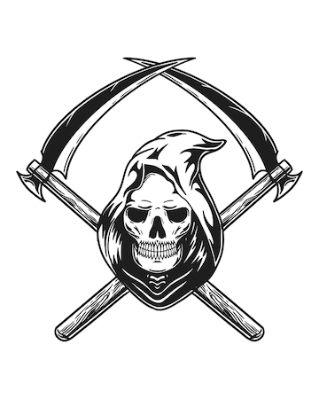

Sobre a banda
Korn (estilizado como KoRn ou KoЯn) é uma banda de nu metal de Bakersfield, Califórnia. Frequentemente levam o crédito de ser os pioneiros do gênero nu metal e ter inspirado a onda de nu metal, metal alternativo e influenciado bandas de rapcore no meio dos anos 1990 e começo do século XXI, ajudando, em particular, Limp Bizkit (banda que foi descoberta pelo Korn) e junto a eles disseminaram o nu metal pelo mundo todo.
Historia da banda
Os Korn tem as suas origens no começo dos anos 1990, mais concretamente em 1992, em Bakersfield, uma pequena cidade árida ao oeste do "Vale da Morte (Death Valley)". Na adolescência, o baterista David Silveria, o guitarrista Munky e o baixista Fieldy tocam nos L.A.P.D.. Logo depois de gravar um disco com um vocalista provisório a banda acaba. Eles não conseguem ficar separados por muito tempo, voltando como Creep já com o guitarrista Head como membro definitivo.
Membros
- Jonathan Davis
- Brian Welch
- Reginald Arvizu
- James Shaffer
- Joey Jordison
- David Silveria
- Ray Luzier
- Morgan Rose